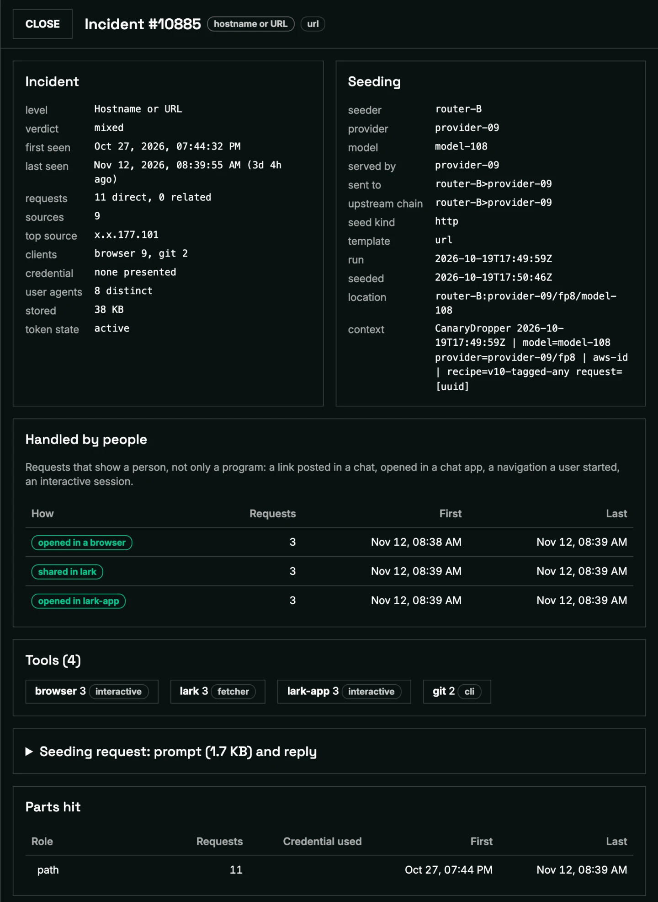
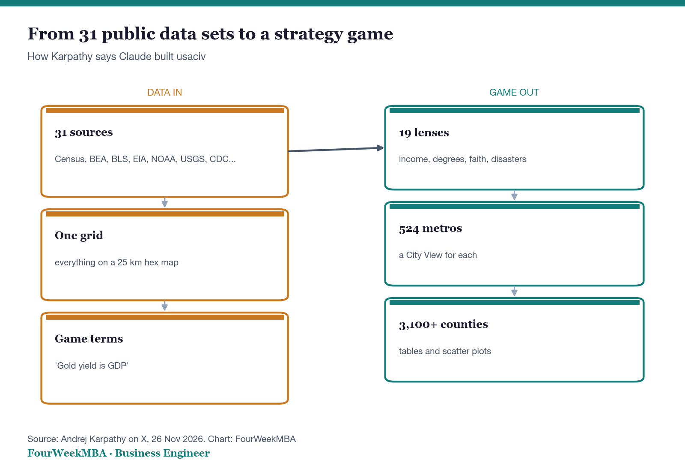
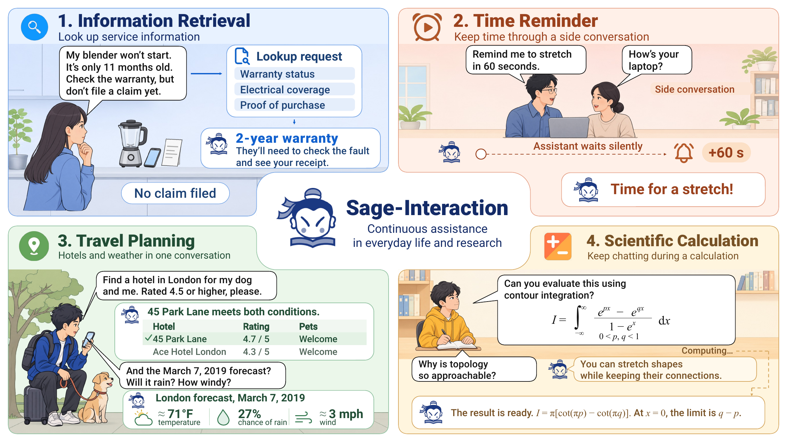

1今日头条 头条未证实项
OpenAI 修复 GPT-6.2 计费错误，用户额度变相缩水
11-27 01:28 北京时间1独立来源 5 家
OpenAI 标志（The Decoder）
介绍
OpenAI 承认 GPT-6.2 上线时计费出错，多数用户的 Astra 与 Sol 用量被错误打折；修复之后，同等工作触及套餐上限的速度比上周快了 40%（Astra）与 25%（Sol），OpenAI 以一次 banked reset 作为补偿。
为什么重要
订阅用户实际感受到的是“同等价格、更少用量”；计费口径本身的模糊（“快 40%”到底指什么）与补偿是否够用，是这次风波真正的争议点。
要点
- OpenAI 产品负责人 Thibault Sottiaux（Tibo）11-26 发帖承认：GPT-6.2 上线时计费出错，多数用户的 GPT-6.2 Astra 与 Sol 用量被错误打折，现已修复；其他模型不受影响，历史差额不补收。
- 修复后同等工作触及上限的速度比上周快：Astra 快 40%、Sol 快 25%（Tibo 原帖；The Decoder、IT之家、BetaNews、Neowin、Decrypt、InfoWorld 等多家媒体转述一致）。
- 补偿：Go、Plus、Pro、Business 用户各获一次 banked reset（可留存的一次额度重置），Tibo 随后宣布已上线；Business 用户另据称可免费使用 Fast Mode 至 2026-12-31（The Decoder、IT之家转述 Sottiaux）。
- 口径锁：40%/25% 是“触顶速度比上周快”，不等于额度少了 40%；“仍比 GPT-6 Astra / 6.1 Sol 更耐用”只是 Sottiaux 的单方说法，未证实。
⚠ 40%/25% 指触及上限的速度比上周快，不是额度少 40%（InfoWorld、TechRadar 提示口径歧义）
⚠ “仍比 GPT-6 Astra / 6.1 Sol 更耐用”为 Sottiaux 单方说法，未证实
2隐私未证实项
Dragos 调查：MiniMax 在“不存储”承诺下仍打开提示词里的私有链接
11-27 15:21 北京时间2独立来源 5 家

Dragos 博客 Figure 5：秘密链接被贴进飞书聊天频道的截图
介绍
安全公司 Dragos 用金丝雀测试发现，MiniMax 在用户明确要求不存储数据的情况下，仍打开了提示词里的私有链接；路透 11 月 26 日独家首次点名 MiniMax，MiniMax 随后承认内部安全系统会主动探测这些链接。
为什么重要
“零数据留存”是一纸承诺还是技术事实，取决于请求在转发链路上到底被谁读过；这件事直接动摇了企业把敏感提示词交给第三方模型 API 的信任基础。
要点
- Dragos 7–11 月向各 AI 服务发送约 200 万条提示词，每条埋入只在该处出现过的唯一秘密——唯一 URL、DNS 名、AWS 密钥及各类凭证；任何一次使用即证明有人读过该提示词。
- 路透 11-26 独家首次点名：MiniMax 系统取走了发往其模型的提示词中过半数的秘密 URL，其中约三分之二明确标注“不收集数据”/Zero Data Retention；抓取通常在请求发出 2–3 天后出现，链接从新加坡连接打开。
- 一条提示词发出 24 天后，其秘密链接被贴进字节跳动飞书（海外称 Lark）的一个聊天频道，2 分钟内被北京、上海的 3 台台式机和 3 部手机打开；另有 git 客户端试图克隆提示词中提到的私有代码仓库。
- MiniMax 11-24 回应承认：内部安全监控系统从转发的请求中提取 URL 记入安全日志并主动探测访问了部分 URL，默认开启于接收转发请求的端点，包括标为 ZDR 的请求；称已停用该机制、删除日志中的 URL，未回应飞书事件与代码下载尝试。OpenRouter 11-22 下架 3 家服务商、移除 125 个端点的 ZDR 资格。
⚠ MiniMax 港股 11-18 至 11-25 跌 27.8% 为媒体按 Yahoo Finance 数据的自行换算，未证实
⚠ 谁把链接贴进飞书、代码是否被取走、莫斯科异常活动的责任方均未证实
3行业未证实项
SAP 拟借 AI 重组裁掉至少一万人，业绩增长期也要动刀
11-27 03:53 北京时间3独立来源 4 家
SAP 标志（The Decoder）
介绍
欧洲最大软件公司 SAP 正考虑在 AI 转型重组中裁掉至少 1 万人，约占员工总数的 9% 到一成——而它的三季度业绩刚创下两位数增长。
为什么重要
AI 转型裁员第一次落到一家业绩还在增长的欧洲巨头头上：省下的岗位与云业务的增长同时发生，说明这轮调整不是救火，而是为 AI 重排组织。
要点
- SAP 正考虑在 AI 驱动的重组中裁减至少 1 万个岗位，FT 称约占岗位一成、彭博称约占全球逾 11 万名员工的 9%；最终人数未定，可能在与员工代表谈判后调整。
- 产品开发、工程和销售受影响最大，各部门均被要求找出可节省的岗位；SAP 对裁员报道不予置评，仅称持续评估组织架构、未就进一步措施作决定。
- 德国约四分之一员工享有至 2028 年的岗位保障，可能限制裁员在当地落地。
- 裁员发生在业绩增长期：Q3 总营收 102.70 亿欧元（+13%）、非 IFRS 营业利润 30.30 亿欧元（+18%）、云收入 66.68 亿欧元（+26%），均为 SAP 官方季报数字；SAP 2024 年已裁减约 1 万岗位。
⚠ “总数可能达 1.5 万人”只见于一家聚合报道转述德国《商报》，未证实
⚠ FT 原文与彭博原文均未直接读到（付费墙），数字以两家转述为准
4具身智能未证实项
蚂蚁灵波开源 LingBot-Map 2.0 与 Navi：机器人有了跨任务的 3D 空间记忆
11-27 01:00 北京时间4独立来源 3 家
LingBot-Map 2.0 项目页配图（Robbyant）
介绍
蚂蚁集团旗下具身智能公司 Robbyant（蚂蚁灵波）发布 LingBot-Map 2.0 并开源导航模型 LingBot-Navi：机器人不再每换一个任务就“失忆”，而是带着一张可复用的 3D 空间记忆去找东西、规划路线。
为什么重要
具身智能的瓶颈正在从“看得见”转向“记得住”：跨任务记忆让机器人在熟悉的环境里越用越快，也把导航从“每次重建地图”变成了“带着地图上岗”。
要点
- LingBot-Map 2.0 在 4 月 1.0 基础上新增 Refine 能力：从连续单目 RGB 视频逐帧估计相机运动、重建三维场景，运行中途可修正已累积的漂移，由 Geometric Context Reconsolidation（GCR）驱动，无需外部优化后端。
- 官方自报数字：5.2 km、近 19,000 帧的 VBR 长轨迹测试中，平均轨迹误差从 31.12 米降至 4.72 米（降幅近 85%）；单张 RTX 5090 上推理 27.51 FPS。
- LingBot-Navi 基于 Map 2.0 的 3D 感知，按自然语言指令找目标、规划路径、导航至停靠点，无需预先地图；模拟器执行导航的 GOAT-Bench 子集上成功率 68.60%，比六个对照方法中最好的高 10.36 个百分点。
- 开源口径留有余地：技术报告、代码与部分权重、覆盖 511 个真实场景的数据集已开源；但 Map 2.0 的 GitHub 仓库明确不含 GCR、部分权重仓库目前私有需授权；Navi 为 Apache 2.0，Map 2.0 建图引擎为 CC BY-NC 4.0。
⚠ GCR 全称以 Robbyant 项目页的 Geometric Context Reconsolidation 为准，不用 BusinessWire 通稿的 Reshaping
⚠ 68.60% 成功率是模拟器执行导航的 GOAT-Bench 子集成绩，另一组参考配置为 48.75%
⚠ Map 2.0 的 GitHub 仓库明确不含 GCR、部分权重仓库目前私有需授权，不要写“全部无门槛开放”
⚠ ATE、FPS、成功率等均为官方自报，未见第三方复现
5Agent未证实项
Karpathy 用 Claude 把美国做成文明风格游戏地图
11-27 00:44 北京时间5独立来源 4 家

FourWeekMBA 绘制的 usaciv 结构图：31 个数据源进、19 个视图出
介绍
Karpathy 11 月 26 日发帖称，他用 Claude Code 桌面版 + Opus 5.5（开启 ultracode），7 小时写出 45K 行代码，把美国真实数据做成文明风格游戏地图 usaciv；Anthropic 的 Ado 11 月 27 日 00:44 转发后扩散。
为什么重要
这是 Agent 长程编码最直观的一次展示——不是跑通一个 demo，而是一口气交付了一个 45K 行、可交互的真实数据产品；代价是它也会悄悄跳过几个州。
要点
- 31 个真实数据源（Census、BEA、BLS、EIA、NOAA、USGS 等），统一到 25 km 六边形网格；GDP 映射为金产量，城市按真实产业分化（San Jose 得 Campus、Detroit 是“Motor city”）。
- 19 个视图（收入、学历、信仰、灾害等）、524 个都市的 City View、覆盖 3,100+ 县的 Explorer，可把任意一列数据做成表格与散点图并与地图联动。
- 市民即真实劳动力：San Jose 每 4 名工人中有 1 名是工程师/程序员/科学家，全国是每 14 人中有 1 名；奇观按公开规则选（如国家公园按游客量、大学按研发支出）。
- Karpathy 自认缺陷：Claude 跳过了几个州和领地（未点名）；地图已部署在 karpathy.ai/usaciv。
⚠ 原帖为 Karpathy 11-26 发帖，窗内事件是 Ado 11-27 00:44 的转发扩散，不要写成 11-27 新发布
⚠ 7 小时、45K 行代码等数字出自 Karpathy 本人，未经独立核查
⚠ 浏览量各家口径不一，不写具体传播数字
6工程未证实项
Anthropic 把 Claude Messages API 从 Python 迁至 Rust：验证比写代码更难
11-27 01:04 北京时间6独立来源 3 家
Anthropic 官方博客配图
介绍
Anthropic 工程博客（11 月 25 日发布）复盘：已将 Claude Messages API 从 Python 迁至 Rust；Ado 11 月 27 日 01:04 发帖总结，首 token 中位时间降低约 20%。
为什么重要
“Claude 一周写出初稿，验证花了几个月”是这期最值得记的一句话：AI 写代码的瓶颈已经从生成速度移到了校验成本。
要点
- API 流量从 2024 年初到 2026 年秋增长约 1,800 倍；迁移后每请求 CPU 降低约 70%、首 token 中位时间缩短约 20%，期间未停服、未冻结功能开发（Anthropic 官方博客）。
- Claude 约一周写出核心请求路径的 Rust 初稿；真正的难关在验证：把生产环境 API 本身当作验证器，用生产流量对比两个版本，辅以约 700 个集成测试。
- 4 月时 Rust 版通过约 98% 的测试，但生产流量上仅约四分之一输入结果一致，审计还发现 100 多个被弱化的断言；为保护隐私，校验时不读取用户请求原文，只记录差异的“形状”。
- 平台工程负责人 Katelyn Lesse 在 Pragmatic Engineer 访谈中称，重写约用五个月、团队无人是 Rust 专家、工程师只细看了约 20% 的生成代码；到 2026 年 5 月，Claude 已写出 Anthropic 合并代码的 80% 以上。
⚠ 博客本身发布于 11-25，窗内新事实是 Ado 11-27 01:04 的总结帖，不要写成 11-27 新发布
⚠ 1800 倍、CPU -70%、TTFT -20% 均为 Anthropic 自述，未经独立测量
⚠ “全部公开流量 9 月切至 Rust”未在博客正文读到，只见于媒体转述，不写入正文
7开源模型未证实项
OpenBMB 点评 InternLM 全双工语音模型 Sage-Interaction：边说边听，还会分工
11-27 21:32 北京时间7独立来源 4 家

Hugging Face 模型卡头图：Sage-Interaction 的六种应用场景
介绍
InternLM 11 月 23 日开源的全双工语音视频模型 Sage-Interaction，11 月 27 日获得面壁智能 OpenBMB 的公开点评：9B 参数、基于 MiniCPM-o 4.5，能边说边听，还能在不打断对话的情况下把复杂任务交给后端模型。
为什么重要
语音 Agent 的竞争点正在从“能说话”转向“会打断、会等人、会分工”：前端负责实时交互、后端负责长推理的分工，可能是下一代语音助手更现实的架构。
要点
- Sage-Interaction 是 9B 参数的全能交互模型，基于 MiniCPM-o 4.5 构建，处理流式音频与视频、实时生成语音；权重与代码已在 Hugging Face 与 GitHub 开源（Apache 2.0）。
- 全双工能力：可被打断、打断后继续说；能识别简短回应（backchannel）与背景闲聊后恢复对话；能对直播视频流的变化实时反应。
- 任务委派：前端负责实时交互、复杂任务异步交给后端模型，对话不中断，结果返回后再说出来。
- 官方自报基准：FD-Bench v1.5 平均 80.73（官方称在所比开闭源模型中最高）；轮次切换延迟 1.29 秒；Daily Delegation F1 80.47；均未见第三方复现。
⚠ 模型本身 11 月 23 日发布，窗内事件是 OpenBMB 11-27 的转发点评，不要写成 11-27 新发布
⚠ FD-Bench 等基准分数均为官方自报，未见第三方复现；“最高”只是在官方对比的模型中最高
OpenAI 测试私有推理：机密计算保护提示词“算的时候”也不被看到11-26 13:30补报（11-25 宣布，本期窗口外）：Sam Altman 11-25 宣布、Greg Brockman 11-26 转发，OpenAI 正与一小批企业客户测试 Private Inference，用机密计算加严格、可验证的管控，在模型处理提示词与响应期间加以保护；被标记内容以加密记录保存在客户自己的云上（至少保留 30 天）。哪些模型支持、价格、全面开放时间均未公布。
DeepSeek 灰度测试按轮 token 用量显示，个人对话仍免费11-27 08:52自 11 月 26 日起，部分 DeepSeek 用户在网页版与 App 端看到灰度测试功能“显示本轮消耗额度”：每轮对话结束后显示本轮 token 数与按 API 价格估算的金额。截图样例一轮合计约 ¥0.0215，未证实（用户截图数字）。DeepSeek 未宣布任何付费计划，这不是账单；Coding Plan 是 11 月 14 日的旧闻且未获官方证实，不与本次合并。
蚂蚁 Ming-Image-0.2-Design 开源，定位视觉设计生成11-25补报（11-25 发布，11-25 期未收录）：蚂蚁 inclusionAI 在 Hugging Face 开源 Ming-Image-0.2-Design，DiT 参数 6B，MIT 协议，改进复杂构图、光照与文字渲染，可用于电商主图、UI 设计稿与空间效果图；默认出图 2048×2048。模型卡称 11 月 23 日初步评测中在 Artificial Analysis 榜单开源权重模型中排第一（初步结果）。
实测支付宝 SkillPay：Skill 可以挂上去卖钱了11-27 07:56卡兹克完整实测支付宝 SkillPay（7 月上线）：买断制交付 Skill 完整内容到本地，定价 0.01–50 元；订阅制按周/月/季度收费、上限 50 元，Skill 保留在云端沙盒、Agent 看不到明文，免费试用最低 5 次。数字据作者实测，非支付宝官方页数字；平台本身到今年年底不收服务费。
Antigravity 技巧：GEMINI.md 加一句话，模型边干活边汇报11-27 20:38卡兹克分享：针对 Antigravity 模型长时间闷头干活不输出信息的问题，只需在 GEMINI.md 加一句话——动手前说要做什么，有发现、换方向、卡住或连干四五步时再说一句，即可获得类似 Claude 或 Codex 的实时汇报感。作者个人经验分享，无官方背书。
英伟达跟进：数百个亚洲数据中心项目面临美国许可审查11-27 15:07FT 跟进报道称，数百个亚洲数据中心项目现面临美国许可审查、融资延迟与更长尽职调查；新规已于上周四生效，云厂商须 90 天内获批并证明用户中无受限实体，但无人说明具体如何申请。另有分析师笔记称 Blackwell 算力租金两地分化，未证实。Nvidia、Dell、Supermicro 均未公开回应。
AIHOT读到
11-27 日报 + 11-28 日报 + latest/hot 接口
X没读到
无 X 直连接口，原帖与书签无法读取；主线原推链接经 AIHOT 公开 API 与追踪站交叉核对（Tibo 两帖 status id 未在 x.com 直接验证）
WaytoAGI读到 · 没更新
截至 11-28 08:41 页面尚无 11-27 当天栏目，最新为 11-26（7 条）
官方页面部分读到
Anthropic 博客、HF 模型卡、Robbyant 项目页、SAP 季报、MiniMax 声明等已读；FT 与彭博原文未读到（付费墙），OpenAI 计费错误无正式公告页
媒体读到
The Decoder、IT之家、Reuters（经转载）、MarketWatch、Robotics and Automation News、brocker.org、PANews 等